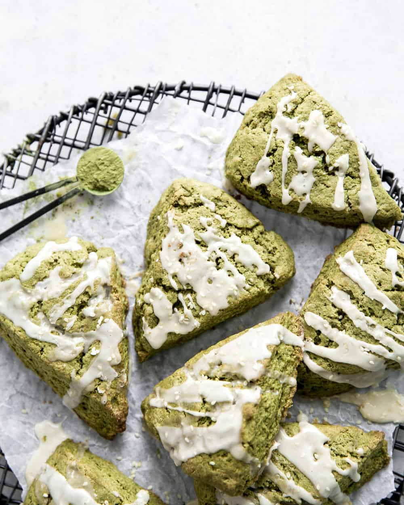

Matcha Scones

Description
Sweet and simple matcha scones recipe with icing.
Ingredients
- 2 cups flour
- 2 tsp baking powder
- 1/2 tsp salt
- 1/4 cup sugar
- 2 tbsp matcha powder
- 1/2 cup butter
- 2 eggs
- 1/4 cup milk
- 1 tsp vanilla extract
Steps
- Combine dry ingredients.
- Incorporate cold butter into flour mixture.
- Add wet ingredients.
- Knead and form into 1-1.5 inch thich disk.
- Cut into slices and brush with an egg wash.
- Sprinkle with sugar.
- Bake at 350 for 14-17 min (slightly browned).